Scientific Classification
| Kingdom | Animalia | Animalia | Animalia |
|---|---|---|---|
| Phylum | Chordata | Animalia | Animalia |
| Class | Mammalia | Animalia | Animalia |
| Infraclass | Placentalia | Animalia | Animalia |
| Order | Artiodactyla | Animalia | Animalia |
| Suborder | Whippomorpha | Animalia | Animalia |
| Infraorder | Cetacea | Animalia | Animalia |
Taxonomic note: Cetaceans are a diverse lineage of fully aquatic mammals comprising both baleen whales and toothed whales. In Kaimere, their classification follows the broad division between Mysticeti and Odontoceti, although the relationships of several endemic and introduced forms remain uncertain. The marine environment has repeatedly received new cetacean lineages through the Portal, and the resulting assemblage includes representatives of groups that became extinct or greatly diminished on Earth.
01 · INTRODUCTION
Overview
The cetaceans of Kaimere constitute one of the most successful and ecologically diverse radiations of marine mammals in the planet's modern oceans. Their history is closely associated with the repeated opening of the Portal, the catastrophic marine extinctions that followed the Dynastic Extinction, and the subsequent reorganization of Kaimere's marine ecosystems. Although marine reptiles had dominated the oceans surrounding the Known World for millions of years, the arrival of cetaceans introduced a new and exceptionally adaptable group of predators and filter feeders. Within a relatively short geological interval, they occupied feeding niches ranging from the shallow benthos of the Trakaiam Sea to the deepest submarine canyons of the southern oceans.
The diversity of Kaimeran cetaceans is particularly notable because it developed under environmental conditions quite different from those of modern Earth. Kaimere possesses generally warmer oceans, with a highly productive marine food web supported in part by endemic purple algae. The resulting abundance of plankton, crustaceans, fish, and cephalopods sustains substantial populations of marine vertebrates. However, this productivity is not distributed in the same concentrated seasonal pulses characteristic of Earth's colder oceans. Frequent upwellings, riverine runoff, and localized nutrient circulation support productive marine habitats across a wider geographical area, but they do not consistently generate the enormous seasonal concentrations of prey that allow the largest baleen whales on Earth to sustain their exceptional body sizes.
This distinction has profoundly influenced cetacean evolution. The largest modern whales of Earth evolved within an ecological system in which immense aggregations of krill and other small prey could support the energetic requirements of very large animals. Kaimere's baleen whales generally encounter a more dispersed resource base. Consequently, most resident species remain comparatively modest in size, with several major lineages specializing in particular feeding environments rather than evolving toward progressively greater dimensions. The largest animal of Earth, the blue whale, remains substantially larger than the largest cetaceans native to Kaimere.
The difference is particularly evident in the distribution of baleen whales. Cetotheres, which are comparatively small filter feeders, have remained highly successful in Kaimere. Their versatility allows them to exploit a wider range of prey concentrations than the highly specialized feeding apparatus of many rorquals. Rather than relying exclusively on enormous seasonal swarms, cetotheres have developed feeding strategies adapted to the abundant but comparatively dispersed resources of warm coastal seas. Several have become permanent residents of the Inland Sea, where shallow water, extensive seagrass meadows, and broad continental shelves provide extensive feeding grounds. Others migrate between northern plankton-rich waters and southern upwelling systems.
Rorquals have also established themselves, although they never achieved the diversity or ecological dominance seen in the oceans of Earth. Many Kaimeran rorquals descend from relatively basal members of their respective lineages and are not especially close to the living species familiar to modern naturalists. They tend to exploit more seasonal and geographically concentrated prey resources, particularly in the southern oceans. Their success has depended less upon sheer size than upon swimming efficiency, migration, and the ability to evade the many predators of Kaimere's marine environments. The humpback, or eagle whale, represents a particularly successful exception. Its exceptional agility, cooperative feeding behavior, and ability to manipulate prey aggregations have allowed it to thrive where other rorquals have struggled.
The toothed whales have undergone an even more extensive ecological radiation. They occupy nearly every major marine mammalian predatory niche, from small fish-eating dolphins of the Inland Sea to deep-diving squid specialists, macroraptorial sperm whales, and highly social dolphin predators. Several lineages have also entered freshwater environments. The rivers and wetlands of eastern Arvel and the Crescent delta's and rivers support specialized river dolphins, while the shallow channels and sedimentary basins of the Inland Sea sustain cetotheres adapted to benthic feeding. Some of these freshwater species have evolved sufficiently distinctive ecological and anatomical characteristics that their relationship to better-known terrestrial cetacean groups remains debated.
Unlike the oceans of Earth, Kaimere's cetaceans must contend with a particularly formidable community of marine predators. Megalodon, several mosasaur lineages, elasmosaurians, and other large marine reptiles remain important threats. Even mature whales cannot rely entirely upon their size for protection. The enormous blue and fin whales introduced through a North Africa approximately 500,000 to 250,000 years ago were hunted to extinction by groups of motomazor, whose cooperative hunting and predatory specialization made the whales' immense size insufficient protection. Other cetaceans have consequently evolved enhanced agility, defensive behavior, and social cooperation. The humpback is particularly combative, while bilyuk and cachalot are capable of inflicting serious injuries upon large predators. Even smaller dolphins often rely upon coordinated group behavior to evade or confront animals substantially larger than themselves.
The history of Kaimere's cetaceans is therefore not simply one of mammalian expansion into a previously reptile-dominated environment. It is a history of repeated introductions, competitive replacement, regional isolation, and ecological specialization. Several groups that initially became abundant subsequently disappeared or were reduced to isolated relict populations. Others, particularly the cetotheres, have remained successful through the development of highly specialized feeding strategies. The modern fauna represents the accumulated result of these events, with ancient Kaimeran descendants existing alongside relatively recent arrivals from several different Earth harvests.
02 · DEEP TIME
Evolutionary History
The First Marine Mammal Introductions
The earliest significant introduction of marine mammals to Kaimere occurred during the Oligocene harvests. These events brought several marine mammals into the planet's oceans, but their long-term influence was limited. The marine environments affected by these introductions had not experienced the same degree of ecological destruction that would characterize the later Dynastic Extinction and its aftermath. Consequently, the incoming mammals encountered fewer opportunities to establish themselves as dominant components of the marine fauna.
Some populations may have persisted for a time, but no major modern cetacean lineage is confidently associated with this earliest phase. Their limited ecological legacy contrasts sharply with the much more consequential marine mammal introductions that followed approximately fifteen million years ago. The Oligocene arrivals nevertheless established an earlier history of mammalian presence in Kaimere's oceans, preceding the subsequent expansion of cetaceans.
The Dynastic Extinction
The Dynastic Extinction, approximately fifteen million years ago, fundamentally altered the ecological context of Kaimere. Marine volcanic activity and associated environmental disruption devastated extensive areas of coastal and oceanic habitat. Marine reptiles that had enjoyed millions of years of relative supremacy suffered substantial declines, while numerous marine ecosystems became unstable or temporarily depopulated.
The resulting disruption created extensive ecological opportunities. Although some sharks and marine reptiles gradually returned, the marine food webs of the Known World were no longer structured as they had been before the extinction. The loss of many established predators and competitors left considerable numbers of ecological niches available to incoming animals.
The event was also associated with a dramatic increase in Portal activity. This made possible a series of new introductions that would permanently change the composition of Kaimere's marine ecosystems. Among these introductions, cetaceans would become the most successful group of marine mammals.
The First Major Cetacean Radiation
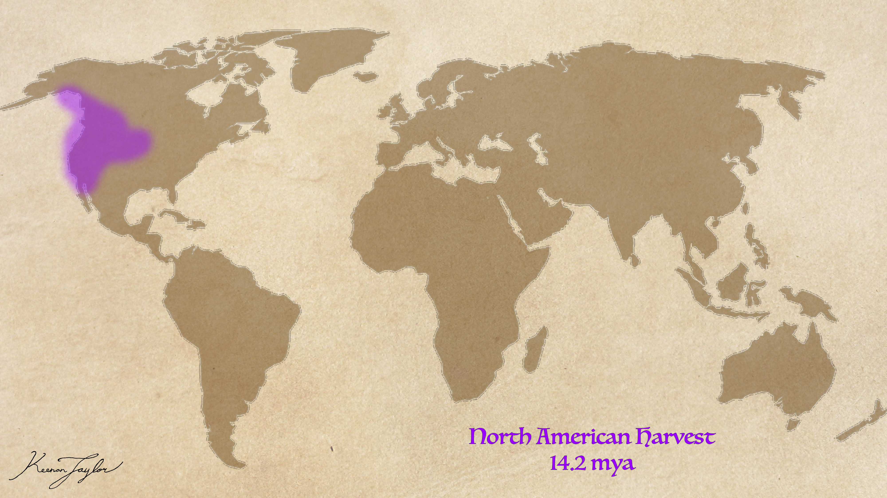
Around fourteen million years ago, cetaceans entered Kaimere in substantial numbers. Their arrival followed the Dynastic Extinction and occurred while marine ecosystems were still recovering from the earlier destruction. The abundance of newly available habitat and prey provided unusually favorable conditions for the establishment of large marine mammal populations.
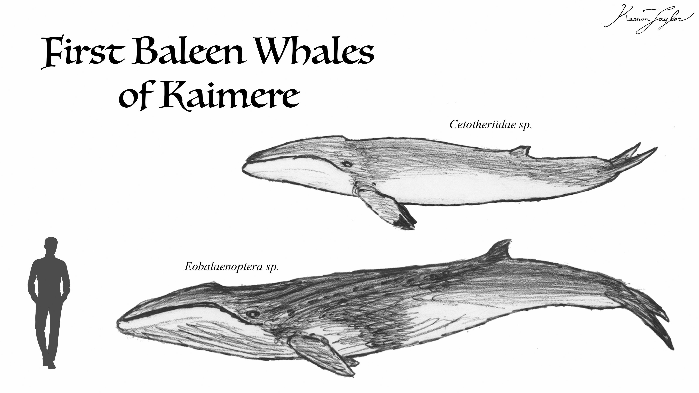
Cetotheres experienced the more extensive radiation. Their feeding strategies proved versatile enough to exploit different prey distributions and feeding environments, while their relatively modest body sizes reduced their dependence on enormous, concentrated food aggregations. Early representatives eventually gave rise to several major Kaimeran lineages, including the benthic bilyuk, the surface-feeding bilgetu, and the more generalized bilur.
Rorquals also became established, but their evolutionary success was more limited. The warm climate and the comparatively diffuse distribution of nutrients did not provide the same conditions that had allowed Earth's rorquals to become enormous and highly diverse. Their characteristic lunge-feeding strategy was still useful, but it was less consistently advantageous in Kaimere's warmer waters. Many of the planet's rorquals consequently remained relatively close to basal members of their lineages rather than developing into a radiation comparable to that of Earth's modern rorquals.
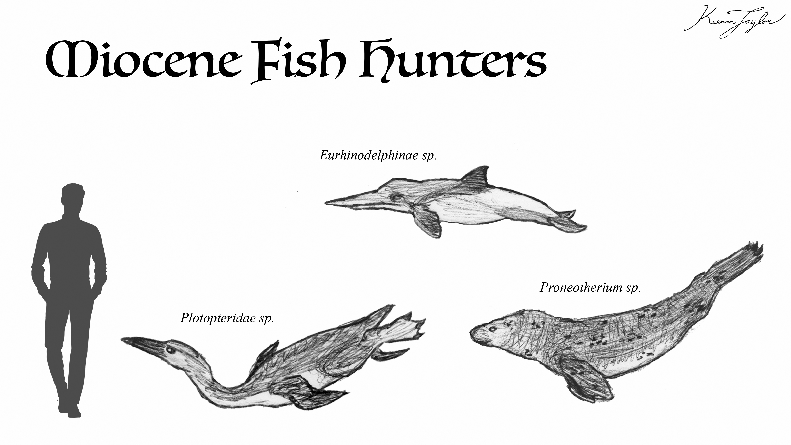
The toothed whales followed shortly after the baleen whales. Among the earliest successful groups were eurhinodelphines, long-snouted cetaceans resembling dolphins. These animals became abundant and diverse, specializing in the capture of small fish and other relatively small marine prey. Their success was initially considerable, and for several million years they were among the most widespread small cetaceans in the Known World. Their appearance was unexpected to some Assembly palaeontologists because the group was not previously known from the Pacific in the same context. This has prompted speculation that its original geographical range was considerably broader than the surviving fossil record indicates, or that the relevant Portal opening harvested a wider geographical area than initially assumed.
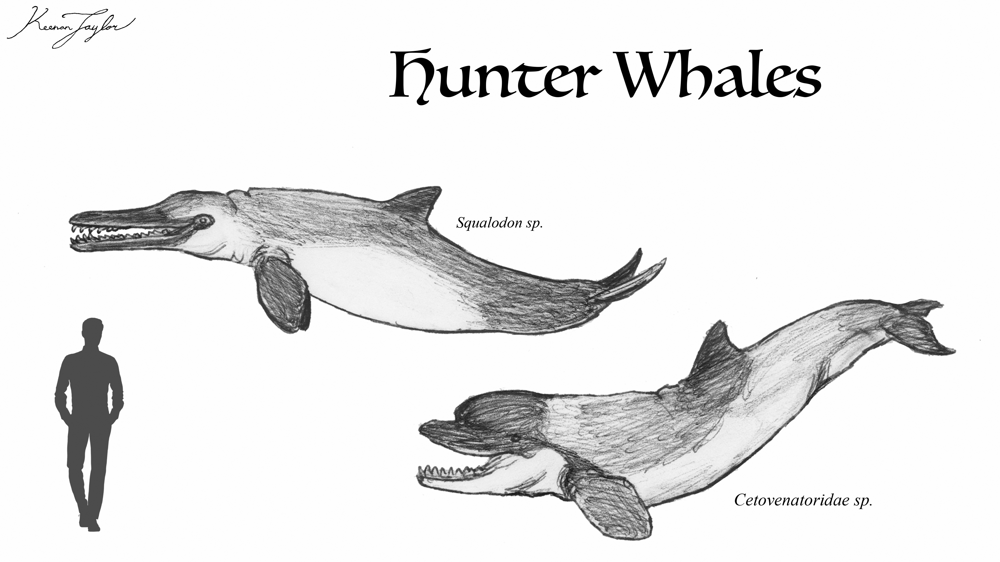
The first major cetacean radiation also included predatory toothed whales. Macroraptorial sperm whales, including animals resembling Acrophyseter, entered the marine predator community and began exploiting the abundance of smaller cetaceans and other marine mammals. A large relative of river dolphins, Squalodon, also became established during this broader period of marine mammal expansion. The lineage experienced a second evolutionary opportunity in Kaimere, where it developed into the large Squalodon carnosecarum, reaching approximately nine metres in length. This species was a generalist predator of smaller cetaceans, walruses, desmostylians, sirenians, and other marine animals. For over a million years, it was among the most common large predators of the coastal waters surrounding the Known World.
The Warring Clades Period: Megalodon and the Early Cetacean Predators
The expansion of cetaceans contributed to an increasingly competitive marine environment. The post-extinction seas supported large numbers of marine mammals, but their abundance also attracted predators from different regions and encouraged the evolution and introduction of additional marine hunters.
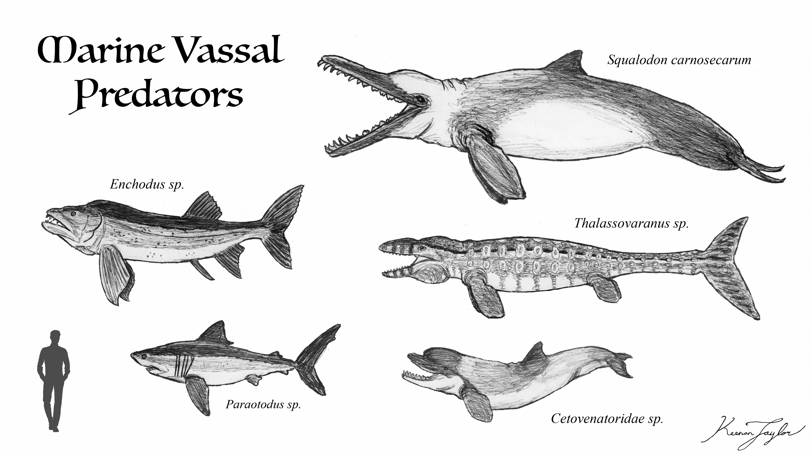
The Warring Clades period was characterized by intense competition among large marine predators. The large mosasaurs and elasmosaurians that had survived the earlier destruction encountered new competition from macroraptorial sperm whales, Squalodon, and other incoming predators. Several of these mammals helped drive established marine reptile lineages toward extinction or regional disappearance, particularly within the coastal waters of the Known World.
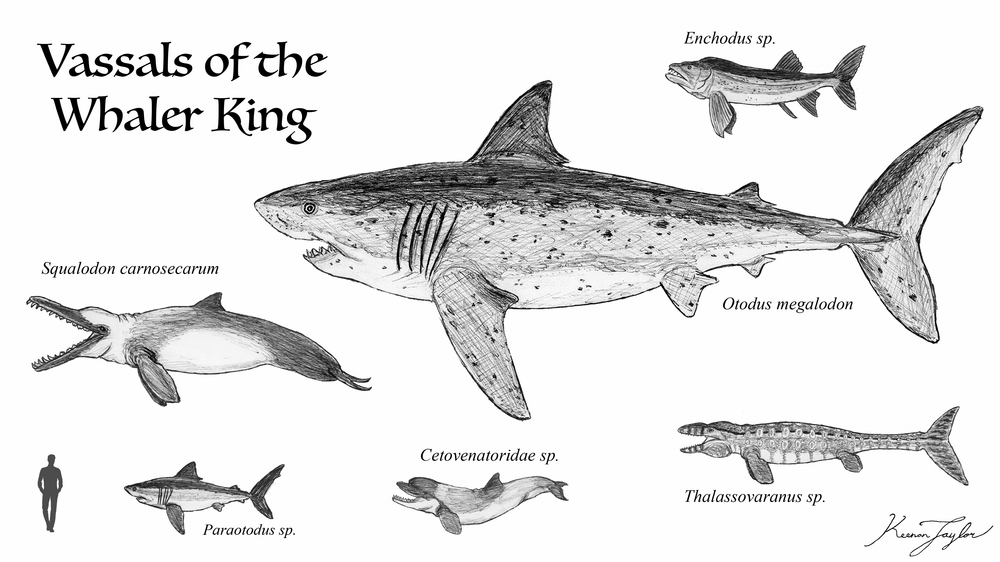
Nevertheless, the arrival and expansion of cetaceans did not immediately displace the largest sharks. The megatooth shark Otodus megalodon attained exceptional abundance and size in Kaimere's productive oceans. Individuals reached approximately fifteen to twenty metres in length, making the species considerably larger than nearly all other marine predators of the period. The abundance of prey, combined with the lack of an equivalent large predator, allowed megalodon to occupy the highest predatory position in the marine food web.
Megalodon remained the dominant marine predator through much of this interval. The early macroraptorial sperm whales and other toothed whales were important predators, but they had not yet produced a lineage capable of consistently displacing the shark from its position. This would change during later Miocene introductions, when substantially larger raptorial sperm whales entered the southern oceans.
Formation of the Inland Sea and the Decline of Eurhinodelphines
The final formation of the Trakaiam Sea as a predominantly seagrass-dominated marine ecosystem produced another major ecological transition for Kaimere's cetaceans. As the sea developed its present extensive shallow-water character, large areas of marine habitat became increasingly structured around seagrass meadows and associated benthic communities.
This change favored animals adapted to exploiting the seafloor and the abundant organisms living within it. Cetotheres were particularly well suited to these conditions, and their bottom-feeding representatives eventually became extremely common throughout the Inland Sea. Their feeding grounds extended across much of the shallow basin, which rarely exceeds approximately thirty metres in depth outside its deeper channels.
The same ecological reorganization contributed to the decline of the eurhinodelphines. Although they had been among the most abundant and diverse small fish specialists of the earlier marine fauna, they increasingly faced competition from more derived dolphins and marine reptiles. Their marine representatives were progressively displaced, leaving only a few relict forms.
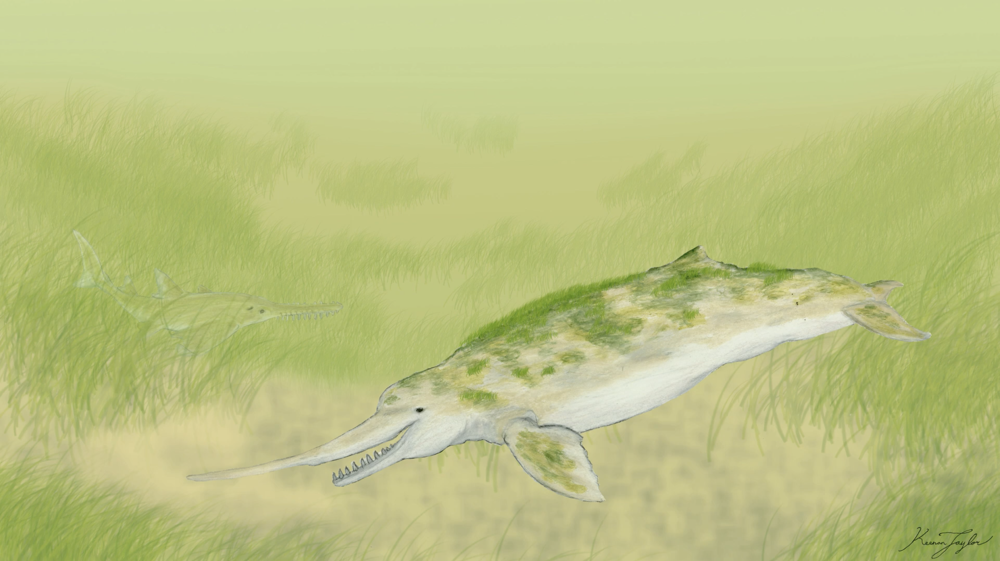
The most significant survivor within the Known World was the ogul, a benthic-feeding eurhinodelphinid that established itself in the rivers and estuaries of eastern Arvel. Its elongated upper jaw permits it to disturb sediment and frighten small fish from the substrate, allowing it to exploit an environment where its more generalized marine relatives had disappeared. Outside the Known World, the northern fencing whale is also believed to preserve a similar eurhinodelphinid ancestry, although this connection remains uncertain.
The development of the seagrass-dominated Inland Sea also coincided with the expansion of other marine herbivores. Sirenians and desmostylians began grazing upon the increasingly extensive underwater vegetation. Although seagrass grazing was not new to Kaimere, these animals benefited from the expanding habitat and became important components of the new marine ecosystem. Desmostylians gained an advantage from their ability to rest upon islands that offered protection from many marine predators, while sirenians generally achieved a wider distribution through their more capable swimming abilities.
The Southern Rorqual Introductions
During the later Miocene, additional rorqual lineages entered Kaimere through separate Portal openings. One of the most significant was the ancestor of the spotted whale, or butuktuk, which arrived through a South American Portal opening approximately six million years ago.
The butuktuk resembles Earth's minke whale in size and general ecological role, but it is not especially closely related to any living minke population. Its ancestry lies among basal members of Balaenoptera, and its Kaimeran descendants have established themselves throughout the oceans of the Known World, particularly in the open waters beyond the Inland Sea.
Unlike the resident cetotheres, the butuktuk relies heavily upon speed and migration. It travels between widely separated feeding grounds, concentrating around seasonal upwellings and glacial runoff in the southern oceans. Its migratory behavior has made it a recognizable target of Akanuk whalers, although its considerable speed makes it less desirable than slower and more easily captured whales.
The Seridic Environmental Collapse and South American Harvest

Approximately six million years ago, a major environmental disaster affected the freshwater and coastal marine habitats of Ni'Khar and the surrounding regions. A volcanic release of phosphorus from the northern mountains of Ni'Khar triggered an enormous bloom of algae and magic. The resulting ecological disturbance devastated the freshwater systems of the Seridic Wetlands and the marine environments of the Crescent. Much of the freshwater within the affected reach of the Known World became toxic, and numerous aquatic communities were destroyed.
Once the excessive nutrient load diminished and the affected environments began to recover, a major harvest brought flora and fauna from Late Miocene South America. The climate and ecological conditions of the source region were sufficiently similar to those of the recovering Kaimeran habitats that the introduced organisms experienced considerable success. Their establishment helped stabilize the region and prevented the need for additional harvests for almost five million years.
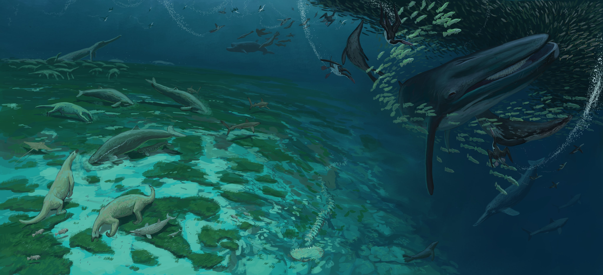
This harvest introduced several important cetacean lineages. Among the most consequential were the ancestors of the modern river dolphins and the genus Odobenocetops. The latter arrived between approximately 6.1 and 5.9 million years ago, subsequently becoming widespread during the Anchored Period. One descendant, the Seridic or Crescent narwhal, eventually developed a distinctive semi-freshwater lifestyle. Its populations occupy the rivers, basins, lakes, and mangrove swamps of the Seridic wetlands, where they feed primarily upon crustaceans and other benthic invertebrates. Some individuals remain in the interior wetlands throughout the year, while others move between freshwater and brackish coastal habitats.
The river dolphins introduced during this broader South American phase also became important components of the freshwater fauna. The Crescent river dolphin is generally considered an Inia-like form, although its relationship to the Miocene genus Saurocetus remains debated. Its descendants spread through suitable rivers and wetlands, producing several distinct regional populations. The giant river dolphin of the Seridic wetlands represents a particularly large and predatory relative, with some males reaching approximately 6.5 meters in length.
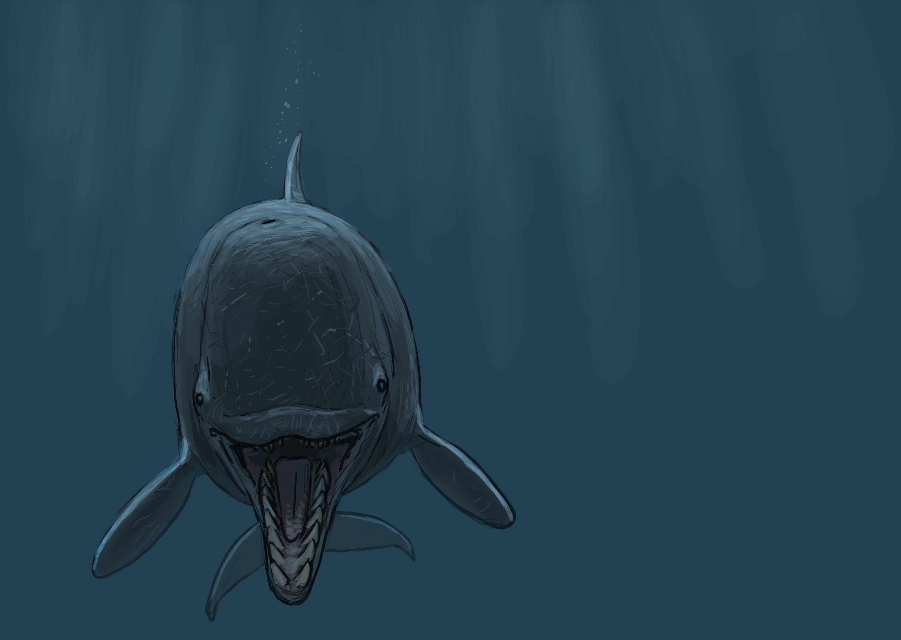
The South American harvest also brought a new generation of large marine predators. Additional megalodon populations entered Kaimere, while the enormous raptorial sperm whale Livyatan became established in the temperate and colder oceans. The grandfather whale, as it became known, was a powerful predator of marine mammals and rapidly established itself as one of the dominant hunters of the southern oceans.
This introduced lineage also produced a major ecological shift in the balance between cetaceans and marine reptiles. Whereas megalodon remained particularly successful in warmer waters, the large raptorial sperm whales became dominant competitors in cooler southern and temperate seas. For a time, the mammals occupied marine predator niches that had previously been held by large marine reptiles.
The Raptorial Sperm Whale Radiation and the Mosasaur Reclamation
The expansion of macroraptorial sperm whales did not result in permanent mammalian control of Kaimere's oceans. From north of the equator came a highly derived lineage of cetacean-like mosasaurs. These animals were social, intelligent, venomous, and capable of cooperative hunting. Their appearance provided marine reptiles with a powerful new group of predators capable of challenging the mammalian hunters.
The large mosasaurs reclaimed the highest predatory position in many marine environments. Livyatan was driven from the temperate waters, and the surviving population became restricted to the far southern oceans beyond the Known World. Although this population retained the characteristics of the enormous ancestral predator, it became increasingly isolated and is rarely encountered by Kaimerans.
The macroraptorial sperm whale radiation nevertheless persisted in reduced form. Several related species had previously occupied the Known World, but the combined pressures of derived mosasaurs, megalodon, and increasingly successful dolphins reduced their diversity. The modern sohiajoon and valuk are the remaining representatives known from the Known World.
During the broader late Miocene and Pliocene diversification, other toothed whale lineages also established themselves. Squid specialists became especially successful as the productivity of Kaimere's oceans supported a rapidly diversifying cephalopod fauna. The endemic purple algae contributed substantially to marine productivity, while the slightly warmer waters provided favorable conditions for numerous squid populations.
The Anchored Period Turnover and the Arrival of the Modern Cachalot and First Orcinus
Approximately 1.5 million years ago, Kaimere experienced a major climatic and environmental transition during the Anchored Period. The planet became generally colder, and lower sea levels altered many marine ecosystems. The resulting turnover had a particularly substantial effect on several established cetacean lineages, including Odobenocetops, which had previously been widespread and successful.
During this period, another Portal opening introduced a population of sperm whales from the western Pacific. These animals established themselves as the modern Kaimeran cachalot. The new arrivals were cephalopod specialists, and the environmental changes of the period appear to have favored their rapid expansion. Although several squid-hunting animals were already present, including beaked whales and the elasmosaurian kadanuk, the cachalot found an extensive range of deep-water habitats and prey resources.
The species subsequently spread throughout much of the southern hemisphere, with a smaller population eventually crossing the equatorial barrier. It became particularly abundant within the Great Khalin Sea, where a deep submarine canyon associated with the subduction zone south of the islands provides extensive squid-rich feeding grounds. This environment supports deep-diving populations that generally forage between three hundred and one thousand metres, although individuals may descend to depths of approximately two kilometres.
The Kaimeran cachalot is generally larger than its Earth counterpart. Mature bulls continue growing throughout much of their lives, with growth slowing during their later decades. Large individuals may exceed twenty metres in length, and the largest recorded specimens can approach twenty-five metres. Their robust jaws and enlarged teeth aid in the capture of substantial squid and kraken, while echolocation allows them to locate prey in deep, dark water. Their social behavior is also particularly developed, with bulls responding to the distress calls of other cachalot and sometimes coming to the aid of unrelated cetaceans.
The establishment of Physeter kaimerensis also complicates the evolutionary history of terrestrial sperm whales. Genetic investigations have not detected a clear contribution from modern Earth sperm whales in the established Kaimerean species. Some Assembly naturalists have therefore proposed that the modern sperm whale may not have reached the Atlantic until after the later African harvests. An alternative explanation is that additional harvested sperm whales failed to hybridize with or outcompete the established Kaimerean population.
A population of Orcinus first entered Kaimere and developed into a more specialized marine-mammal-hunting form. These animals differed from the fish-specialist populations and larger specimens that would arrive during later harvests. These whales resemble false killer whales in numerous ways. These became highly abundant and successful predators. They are extremely fast, torpedoing through the water after smaller cetaceans.
The Arctic Introduction of Cetaceans
Approximately 600,000 years ago, the Portal opened in the Arctic Ocean alongside northern Eurasia. Among the few mammals to survive and establish themselves in Kaimere was a tusked whale whose descendants became the Kaimeran narwhal.
The species retained several relatively basal characteristics, including a greater number of teeth and a more prominent dorsal fin than Earth's modern narwhals. Its ancestry was therefore associated with a form that had not undergone the same degree of specialization seen in living Earth monodontids. At the same time, the Kaimerean population developed substantial modifications to its musculature, including enlarged pyramidelis muscles that improved maneuverability.
Additionally numerous other cetaceans like globe-headed dolphins also were introduced. Globe-headed dolphins like the pilot whale and risso's dolphin to commonly spread, along with species like the shingu, that are unique to Kaimere. Although externally similar to Earth's globe-headed dolphins, Kaimere's populations benefit from vastly richer cephalopod resources, resulting in somewhat heavier body proportions, greater average longevity, and larger pod sizes than those observed in modern terrestrial oceans. The shingu possesses an unusually robust body with exceptionally thick musculature through the shoulders and caudal peduncle. The forehead is rounded but less bulbous than that of pilot whales, producing a more streamlined cranial profile. Shingu specialize upon relatively large oceanic squid, many approaching one meter in mantle length.
However, the most iconic introcution from this harvest was the arrival of the new Orcinus. These animals differed substantially in their predatory behavior from the fish-specialist orcas in the future, and much larger than the currently resident Orcinus that arrived nearly a million years prior. They functioned more like the transient orcas of Earth, specializing in marine mammals and other large prey. This lineage possessed several anatomical adaptations associated with its predatory specialization, including an enlarged melon that enhanced echolocation and proportionally larger jaws and teeth. Its arrival introduced a particularly intelligent and adaptable predator into marine ecosystems already occupied by the remaining macroraptorial sperm whales.
Unlike the enormous raptorial sperm whales, these orcas were capable of exploiting a broad range of prey through cooperative hunting. Their intelligence and social behavior allowed them to challenge larger predators despite their smaller body size. They would eventually become an important source of pressure on the surviving macroraptorial sperm whales, particularly in the colder seas where both groups encountered similar marine mammal prey.
The arrival of this lineage also contributed to the later development of Kaimere's distinctive killer whale fauna, which would eventually include several forms with differing ecological specializations and social traditions.
The North African Harvest
Approximately 300,000 to 250,000 years ago, another Portal opening associated with North Africa introduced numerous Rorquals from Earth, like the blue and fin whales. These animals represented some of the most enormous baleen whales available on Earth, and their introduction might initially have suggested the establishment of a new era of gigantic filter feeders.
Their success was short-lived. Kaimere's oceans contained a far greater diversity of large predators than those of Earth, including several formidable mosasaurs, elasmosaurians, orcas, megalodon sharks, and other marine hunters. The blue and fin whales possessed enormous bodies that would have provided substantial protection against many terrestrial predators, but their size did not offer the same security in Kaimere's predator-rich oceans.
However, not all cetaceans suffered or were driven to extinction when intrduced during this harvest. Among its most significant arrivals were ancestors of the Kaimeran humpback whale, or eagle whale, and a lineage of orcas that would contribute to the development of the modern fish-specialist populations.
The humpback lineage was particularly successful. Its Earthly ancestors possessed unusually long, wing-like pectoral fins and an established capacity for complex cooperative feeding. These characteristics provided an immediate advantage in Kaimere's oceans, where conventional rorquals frequently struggled to exploit the more dispersed concentrations of prey. Humpbacks were capable of conventional lunge feeding when dense prey aggregations were available. However, when swarms dispersed or became less concentrated, they could employ bubble-net feeding. By releasing bubbles in a spiral or progressively tightening formation, groups of whales could herd smaller organisms into dense aggregations that were easier to capture. In Kaimere, this behavior proved useful throughout the year rather than being confined to particular feeding seasons. The whales employed bubble nets and sediment stirring to concentrate scattered fish and crustaceans, supplementing these methods with migrations toward upwellings and glacial runoff. Their feeding flexibility allowed them to exploit a wider range of resources than many other rorquals.
Subsequent adaptation within Kaimere further strengthened the group's advantages. Their caudal peduncles became enlarged, while the muscles of the chest and back developed greater mass to power their unusually maneuverable pectoral fins. These changes supported rapid swimming, agile turning, and the use of their flippers in defensive encounters. Their increased muscularity also imposed greater energetic demands, reinforcing the importance of their unusual feeding strategies.
The humpbacks became unusually combative in response to Kaimere's diverse marine predators. Mature males developed a reputation for attacking dangerous animals, using their powerful flippers and associated musculature to strike or ram threats. Their vocalizations also acquired considerable importance. Rallying songs could attract other humpback males and, in some circumstances, even males of other protective whale species, allowing several animals to confront established predators cooperatively.
The North African Harvest also introduced an important component of Kaimere's modern orca fauna. These Orcinus would subsequently hybridize with orcas brought through the Interrupted Harvest of Central and North America. The resulting populations contributed substantially to the present distribution of the common orca, Orcinus orca, in the Known World.
The more recently introduced orcas were primarily fish specialists, broadly comparable in feeding ecology to the resident orcas of Earth. These animals became widespread and successful, but they did not occupy the position of undisputed apex predators. Kaimere's orcas themselves remained vulnerable to megalodon, mosasaurs, and large elasmosaurian predators. Their success instead reflected their adaptability, intelligence, and ability to organize into socially complex groups.
A separate lineage of orcas developed a more specialized marine mammal-hunting strategy. These animals possessed proportionally larger jaws and teeth and an enlarged melon that enhanced their echolocation. Their hunting behavior placed them in direct competition with the remaining macroraptorial sperm whales, particularly in colder waters where both groups sought marine mammal prey.
This competition became especially consequential during recent millennia. Orcas increasingly hunted the remaining macroraptorial sperm whales, particularly when these larger predators posed a threat to orca populations and their young. Although a large sohiajoon could kill an isolated orca with a single successful bite, coordinated groups were capable of exploiting their superior maneuverability and attacking vulnerable areas such as the tail. The resulting predation pressure contributed to the continuing decline of the macroraptorial sperm whales.
The development of the modern orca assemblage also produced several distinct ecological forms. Some populations remained primarily fish specialists, while others became more dependent on marine mammals, seals, and other large prey. The division between these groups was not absolute, and their distributions overlapped in some regions, but their different feeding preferences reduced direct competition in many areas.
The Interrupted Harvest and the Arrival of Modern Cetaceans
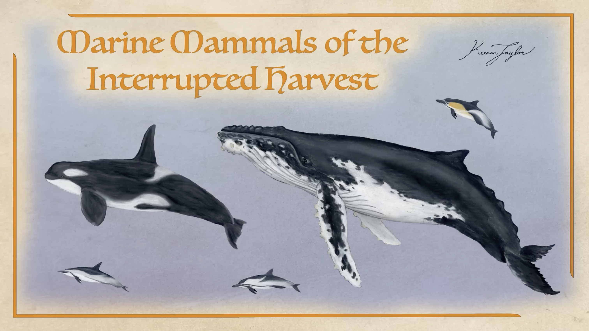
The Interrupted Harvest brought another major influx of cetaceans to Kaimere. Among the most successful arrivals were common dolphins, striped dolphins, spinner dolphins, and bottlenose dolphins, which established themselves in large numbers throughout the Known World.
These comparatively small toothed whales entered marine ecosystems already occupied by numerous larger predators and several specialized dolphin lineages. Their intelligence, rapid reproduction, social behavior, and ability to exploit schooling fish allowed them to spread successfully across coastal and open-water habitats. Their arrival had important ecological consequences for the remaining small mosasaurs. Although several species of small marine reptiles continued to inhabit Kaimere's oceans, many were driven toward scarcity or extinction through competition with the newly established dolphins. Their success demonstrated that large body size and predatory specialization were not the only ways to dominate marine ecosystems. Social intelligence and dietary flexibility could allow comparatively small animals to displace established reptilian predators from important mesopredator niches.
The Interrupted Harvest also contributed to the genetic history of the modern orcas. Animals from the North African and Central and North American introductions hybridized, producing the ancestry of many of the fish-specialist orcas now found in the Known World. These populations subsequently became one of the most widespread and recognizable components of Kaimere's marine mammal communities.
The humpback whale was also represented in this latest Harvest. Combined with the animals introduced approximately 250,000 years earlier, these arrivals contributed to the modern Kaimerean humpback population. The lineage became one of the most successful large whales of the planet, developing an unusually effective combination of cooperative feeding, long-distance communication, and defensive behavior.
Modern Cetacean Diversity
The present cetacean fauna of Kaimere is the result of repeated introductions, extensive ecological replacement, and the independent diversification of several ancient lineages. Unlike Earth's modern oceans, where a relatively limited number of whale groups dominate the larger marine mammal fauna, Kaimere supports a complex assemblage of cetotheres, rorquals, sperm whales, beaked whales, narwhals, and dolphins.
The earliest baleen whale radiation remains particularly influential. Cetotheres continue to thrive in warm shallow seas, retaining the ecological advantages that allowed them to prosper following their introduction approximately 14 million years ago. The top-feeding bilgetu, bilkata, and bilur exploit plankton and small organisms near the surface, while the bottom-feeding bilyuk and bilyukiko forage across seagrass meadows and soft sediment. Their success is closely tied to the relatively stable productivity of the Inland Sea, where extensive feeding grounds allow many species to remain resident throughout the year. The river whale, Pugnopristis fluvius, represents a particularly unusual extension of this radiation, having adapted to freshwater and brackish habitats.
Rorquals remain less diverse than their Earthly counterparts, but several lineages have established substantial populations. The spotted whale and sun whale represent separate introductions of basal rorqual ancestors, while the humpback represents a more recent arrival whose cooperative feeding and defensive behavior have allowed it to become one of Kaimere's most successful large whales. Its presence demonstrates that behavioral innovation can compensate for the relatively diffuse distribution of food resources in Kaimere's warm oceans.
Toothed whales are even more diverse. The early eurhinodelphine radiation has been reduced to a handful of surviving relicts in the Known World, although related forms remain in northern oceans. Macroraptorial sperm whales have suffered a substantial decline and survive only as rare predators in selected regions. In contrast, common cachalots, beaked whales, and several globe-headed dolphins have prospered in the squid-rich marine environments. The modern dolphin fauna also reflects the success of recent Harvests, whose introduced species have spread widely and displaced several smaller marine reptiles.
The evolutionary history of Kaimere's cetaceans is therefore characterized by repeated periods of expansion and replacement rather than a single continuous radiation. Their establishment followed the ecological devastation of the Dynastic Extinction, their early diversification exploited vacant marine niches, and their later success was shaped by the formation of the Inland Sea, repeated South American introductions, Pleistocene climatic changes, and the arrival of increasingly specialized toothed whale predators. The resulting assemblage is not simply a transplanted version of Earth's marine mammal fauna, but a collection of lineages whose histories have been fundamentally reshaped by Kaimere's changing oceans and the repeated activity of the Portal.
03 · SPECIES ACCOUNTS
Known Diversity
The following accounts document representative cetaceans recorded in the encyclopedia. Select a species to consult its individual natural history and descriptive account.
Haraod

Scientific placement to be confirmed
A reclusive highland predator associated with the Arvelith Highlands.
Read species article →Qrin
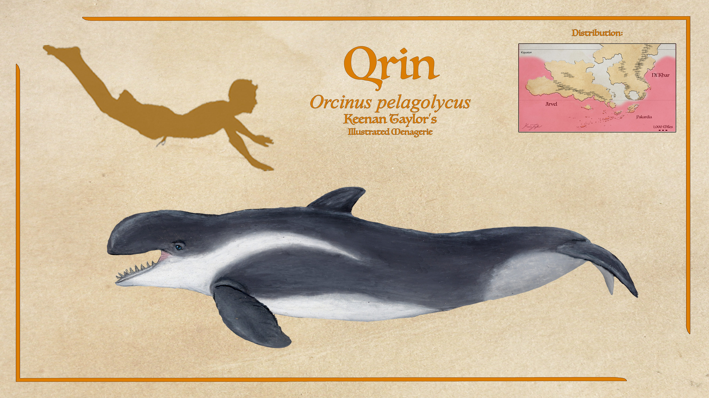
Orcinus pelagolycus
The qrin is also called the common blackfish, hunter dolphin, and sea wolf. Despite a similar resemblance to false killer whales, they are a genus of Orcinus. This is a highly abundant and successful predator. They are extremely fast, torpedoing through the water after smaller dolphins. They are dolphin specialists. Qrin live in complex fission-fusion social structures, mostly hunting in small pods of related females and their young, but keeping in contact with and assembling in massive clans of over a hundred animals to gang up on or cooperate to take down huge gatherings of small dolphins, and sometimes hunting larger game like orcas, beaked whales, or young sperm whales.
Read species article →04 · CLASSIFICATION
Taxonomic Notes
Cetacea is conventionally divided into two major evolutionary branches, Mysticeti and Odontoceti. These divisions remain useful for classifying the cetaceans of Kaimere, although the group's unusual history has produced several lineages whose relationships are not completely understood. The repeated introduction of related but distinct Earth populations has also complicated the identification of direct ancestry, particularly where descendants of separate harvests have subsequently interbred or developed overlapping ecological characteristics.
Mysticeti comprises the baleen whales, which possess keratinous baleen plates rather than functional teeth for filtering prey from the water. Two major groups are particularly important in Kaimere: Cetotheriidae and Balaenopteridae. The former has undergone a substantial radiation in the warm coastal waters and Inland Sea, while the latter is represented by several rorqual lineages, including the sun whale, spotted whale, and the more recently introduced humpback.
Cetotheres are especially significant because their ecological success in Kaimere contrasts with their much-reduced diversity on modern Earth. On Earth, cetotheres were once common and diverse, particularly in warm, shallow marine environments, but most lineages disappeared as oceanic cooling and the increasing concentration of prey resources favored larger baleen whales. The pygmy right whale is the only living representative of the group on Earth. Kaimere's warmer marine climate has preserved ecological conditions more comparable to those of the Miocene and early Pliocene, allowing cetotheres to remain diverse and common.
The Kaimeran cetotheres are traditionally divided into top-feeding and bottom-feeding forms. The top-feeders include the bilgetu, bilkata, and bilur. These species exploit plankton and zooplankton concentrated near the surface, although they differ in body size and feeding behavior. The bilkata is the smallest, while the bilgetu is an intermediate form. The bilur, known in the trade language as the common whale, is the largest of the surface-feeding cetotheres and employs ram feeding alongside other methods. The bottom-feeding forms include the bilyuk and bilyukiko, which forage along the seafloor by stirring sediment and filtering out benthic invertebrates. Their feeding behavior resembles that of Earth's gray whales, although this similarity is primarily the result of convergent ecological specialization rather than particularly close relationship.
The Kentarim names of these whales reflect a linguistic convention rather than a formal taxonomic classification. The word bil denotes a baleen whale, while the additional elements describe particular characteristics of the animal. These names are used throughout the northern Inland Sea and have become common in naturalist descriptions because the Kentarim-speaking coastal peoples have extensive familiarity with the cetothere fauna.
Several cetotheres are provisionally assigned to Pugnopristis. The bilyuk and bilyukiko are both identified under this genus, although their species-level designations remain incompletely specified. The freshwater river whale, Pugnopristis fluvius, is also assigned to the same genus because of its considerable skeletal similarity to the larger bilyuk. Its much smaller size and freshwater specialization make it an unusual member of the group, but the available anatomical evidence has supported retaining the relationship. The precise internal classification of these whales remains somewhat provisional.
Balaenopteridae is represented by several rorquals. The spotted whale, or butuktuk, is a relatively basal member of Balaenoptera, and its resemblance to Earth's minke whale should not be interpreted as evidence of particularly close relationship to modern minke populations. The sun whale is considered a relative of the sei whale, although it represents a distinct Kaimeran lineage. The eagle whale, or humpback, belongs to Megaptera and represents a more recent introduction from Earth. Its Kaimeran populations derive from more than one harvest, making it distinct from the older rorqual lineages established during the earlier history of the planet.
Odontoceti encompasses the toothed whales and is substantially more diverse in the known marine fauna. Its members include sperm whales, beaked whales, narwhals, eurhinodelphinids, river dolphins, and numerous delphinids. Some of these groups have a well-established relationship to Earth lineages, while others are represented by endemic or poorly understood forms whose precise ancestry remains uncertain.
Macroraptorial sperm whales constitute one of the most historically important odontocete radiations. These are predatory sperm whales with enlarged jaws and formidable dentition, adapted for hunting other marine vertebrates rather than specializing upon squid. Several related forms became major marine predators after their introduction, most notably the Livyatan-like grandfather whale. Their modern representatives include the sohiajoon and valuk, both of which retain the characteristic predatory specialization but have become substantially reduced in distribution and abundance. They are now rare, although they remain formidable predators where they occur.
The modern cachalot, Physeter kaimerensis, belongs to a separate sperm whale lineage. It is a deep-diving squid specialist descended from animals introduced through the western Pacific Portal opening approximately 1.5 million years ago. Despite its close resemblance to Earth's sperm whales, genetic investigations have not identified a clear contribution from modern terrestrial species. It is therefore treated as a distinct Kaimeran species rather than simply a population of the Earth sperm whale. Its closest relationships among the various macroraptorial and squid-specialist sperm whales remain a separate question from its overall placement within Physeteridae.
The derp is the only recognized kogiid within the Known World. It is a suction-feeding squid specialist, broadly comparable to the pygmy sperm whale, although its ancestry predates the evolution of the modern dwarf and pygmy sperm whales of Earth. Its unusual defensive adaptation, involving the release of a large quantity of liquid feces, is particularly effective against marine reptiles and other predators with sensitive chemoreception.
Narwhals and odobenocetops represent two distinct tusked odontocete lineages. The Kaimeran narwhal, Monodon kaimerensis, descends from an Arctic introduction approximately 700,000 years ago. It retains several comparatively basal anatomical characteristics alongside derived adaptations associated with maneuverability in colder waters. Unlike Earth narwhals, females usually possess a tusk, although it is substantially shorter than that of males. The Seridic or Crescent narwhal, Odobenocetops limnepatetes, belongs to a separate genus introduced from South America approximately 6.1 to 5.9 million years ago. It is unusual in being a part-time freshwater resident, with some individuals remaining in the rivers, lakes, and mangrove basins of the Seridic wetlands throughout the year.
The beaked whales belong to Ziphiidae. Three forms are particularly recognized around the Known World: the shogun, estan, and boar whale. Their exact ancestry is not established, in part because deep-water ziphiids are rarely preserved in the fossil record. The boar whale has been compared with Earth's Baird's beaked whale, while the estan and shogun exhibit the characteristic deep-diving and squid-feeding specialization of the family. Their species-level nomenclature remains incomplete in some naturalist accounts, and the trade-language term estan is also used more broadly for beaked whales.
Eurhinodelphinidae represents an especially important relict group. These long-snouted toothed whales were abundant during the earliest cetacean radiation in Kaimere, but most of their marine representatives disappeared following later ecological changes. The ogul, a freshwater piscivore of eastern Arvel, is regarded as the last surviving representative of the group within the Known World. Its elongated upper jaw is employed to disturb sediment and frighten prey from the substrate. The northern fencing whale, Xiphorhinocetus robustus, is also believed to be closely related to eurhinodelphinids, although this relationship has not been conclusively demonstrated. Its long rostrum is primarily a feeding and sensory structure rather than a weapon, and its teeth have specialized tips suited to processing benthic prey.
River dolphins comprise several other distinct odontocete lineages. The Crescent river dolphin, Saurocetus potamobates, is generally regarded as an Inia-like animal, although similarities to the poorly known Miocene genus Saurocetus have led some naturalists to favor that assignment. Others propose that the numerous river dolphins of this lineage found in the Known World should be placed in a separate genus. The giant river dolphin, Saurocetes/Inia archodelphis, is confidently considered a close relative of the Crescent river dolphin, although their precise position within the river dolphin family tree remains debated.
The Delphinidae includes several widespread and ecologically important groups. The globe-headed dolphins include the pilot whale, the white-headed dolphin, and the endemic shingu. These are primarily predators of squid and other pelagic animals, with differences in diving behavior, body proportions, and social hunting strategies. The common, spinner, striped, and bottlenose dolphins occupy a variety of fish-eating and generalist niches, particularly within the Inland Sea.
The blackfish and killer whales are represented by several highly social forms. The gaqrin, Orcinus orca, is the largest of Kaimere's orcas and descends from populations introduced through the North African harvest and the later Interrupted Harvest of Central and North America. The polar blackfish, or moqrin, Orcinus kaimerensis, represents a distinct cold-water lineage with a greater specialization for marine mammal prey. The qrin, also known as the common blackfish, hunter dolphin, or sea wolf, is described as one of Kaimere's three killer-whale forms, although its exact taxonomic relationship to the other blackfish is not fully specified in the available material. It has also been compared with the false killer whale. These animals are notable for their complex social organization, cultural differences between populations, and considerable dietary flexibility.
Finally, the western snubnose dolphin, identified provisionally as Orcaela or Paraorcaela mangle, occupies a distinctive position among Kaimeran delphinids. It is believed to be closely related to the Irrawaddy dolphins of Earth or to belong to a sister genus, making it one of the closer relatives of the blackfish. The uncertainty surrounding its generic assignment reflects the incomplete understanding of several Kaimeran delphinid relationships.